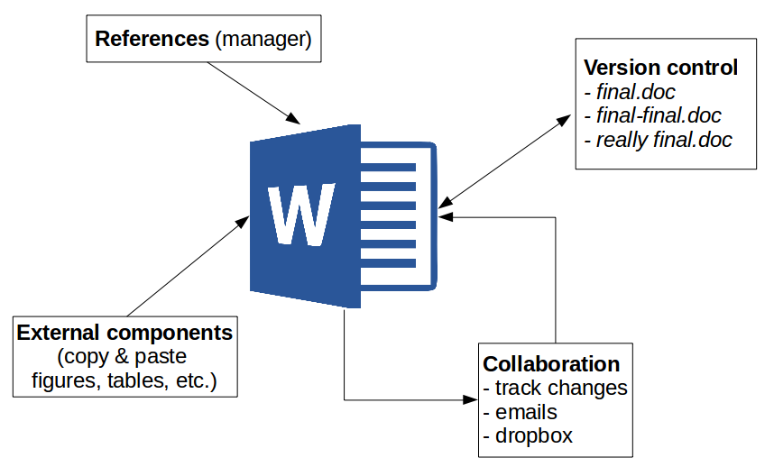
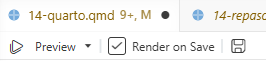

flowchart LR A[".qmd<br>texto + código"] --> B["knitr<br>ejecuta el código R"] B --> C[".md<br>texto + resultados"] C --> D["Pandoc<br>convierte"] D --> E["HTML"] D --> F["PDF"] D --> G["Word"]
Documentos Dinámicos Quarto en Positron
Sesión del miércoles, 4 de noviembre de 2026
Introducción
Hasta ahora hemos analizado datos en R y comunicado los resultados por separado. En esta sesión aprenderemos a escribir el informe y el análisis en un mismo documento, de modo que cada gráfico y cada cifra se calculen al generarlo. La herramienta es Quarto, que viene incluido en Positron.
Al finalizar la clase, generamos un informe reproducible que responda la siguiente pregunta:
Pregunta de investigación del informe
¿Se asocia la escolaridad con el ingreso del trabajo en Chile?
Cápsula de apoyo · Documentos dinámicos con Quarto en Positron
En este video revisamos los contenidos de esta sesión. Puedes verlo antes del taller o usarlo para repasar.
Importante
La base de datos que se usa en el video se puede descargar en el siguiente enlace
A · Escribir en texto plano
El problema de cortar y pegar
El flujo habitual para escribir un informe con resultados estadísticos separa dos programas: el análisis se hace en un software estadístico (por ejemplo, R a través de Positron) y el texto en un procesador de texto (Word, Google Docs). Los resultados viajan de uno a otro copiando y pegando.

Este flujo tiene tres desventajas:
- Barrera de pago o licencia para acceder a los contenidos y editarlos.
- Difícil versionamiento: cuesta registrar quién hizo qué cambio, lo que complica la colaboración.
- No es reproducible: el documento no contiene el código que produjo los resultados, así que nadie puede rastrear de dónde salió cada número.
Imaginemos el siguiente caso: Usted está haciendo un informe sobre la correlación entre escolaridad e ingreso del trabajo a partir de datos de CASEN y obtuvo \(r=0,43\). Copió ese número, el gráfico de nubes y una tabla en un informe escrito en Word. Sin embargo, con su equipo de trabajo luego deciden que es mejor analizar sólo a quienes trabajan 30 horas o más a la semana. ¿Qué partes de informe tendría que rehacer a mano?
- Cambia el n, el coeficiente, y su valor p.
- El gráfico
- La tabla
- Asimismo, debe corregir todas las menciones en el texto (En la sección de resultados, pero también en el resumen y en las conclusiones). Basta olvidar una para que el informe se contradiga a sí mismo
- Además, el documento no guarda el código, por lo que ni el lector, ni su equipo ni usted mismo (en un tiempo más) podrán trazar de dónde salió cada número
Idea central: donde hay cortar y pegar, no hay reproducibilidad.
Texto plano y marcas de edición
La alternativa es la escritura en texto plano: se escribe en un editor de texto (en nuestro caso, Positron) un archivo que contiene solo caracteres, sin formato oculto. El formato se indica con marcas de edición, y un programa convierte después ese texto de entrada (input) en el documento final (output).
Input: lo que se escribe
## Resultados y **asociación positiva**
Output: lo que lee el lector
Un título de sección y el texto asociación positiva en negrita.
Esta forma de escribir es independiente de programas comerciales y plataformas, pone el foco en el contenido antes que en el formato y permite obtener distintos formatos finales desde un mismo archivo. Entre las principales alternativas se encuentran LaTeX y Markdown:
| Control del formato | Marcas de edición | Formatos de salida | |
|---|---|---|---|
| LaTeX (años 80) | Alto | Muchas y complejas | Principalmente PDF |
| Markdown (2004) | Menor | Pocas y simples | HTML, PDF, Word y otros |
Usaremos Markdown, creado por John Gruber y Aaron Swartz con una filosofía simple: que el texto con marcas sea legible incluso sin convertirlo.
Marcas de Markdown más usadas
| Se escribe | Se obtiene |
|---|---|
## Resultados |
Un título de sección (# título, ## subtítulo…) |
**asociación positiva** |
asociación positiva |
*Pearson* |
Pearson |
- primer punto |
Una lista con viñetas |
[CASEN](https://...) |
Un enlace |
 |
Una imagen |
B · Quarto
Documentos dinámicos
Markdown resuelve la escritura, pero los resultados siguen viniendo de otro lado. Un documento dinámico integra en un mismo archivo de texto plano el texto y el código de análisis: al generar el documento, el código se ejecuta y sus resultados (gráficos, tablas, cifras) se insertan en el lugar correspondiente. Se elimina el cortar y pegar, y corregir un análisis es tan simple como volver a generar el documento.
Quarto es un sistema de publicación científica y técnica de código abierto para producir documentos dinámicos:
- Es el sucesor de RMarkdown: misma lógica, más formatos y más lenguajes (R, Python, Julia).
- Se escribe en texto plano, en archivos con extensión
.qmd. - Un mismo archivo puede producir HTML, PDF, Word, presentaciones, sitios web y libros.
- Viene incluido en Positron: no hay que instalar nada adicional.
¿Cómo funciona?
Al generar (o renderizar) un documento, Quarto encadena dos programas: knitr ejecuta el código R y escribe sus resultados en un archivo Markdown, y Pandoc convierte ese Markdown al formato de salida.
Todo esto ocurre al presionar un solo botón en Positron: Preview, o su atajo, Ctrl/Cmd + Shift + K.

Anatomía de un archivo .qmd
Un archivo .qmd tiene dos partes: un encabezado YAML y un cuerpo. En el cuerpo va todo el contenido del documento, es decir, texto y código:
---
title: "Escolaridad e ingresos en Chile"
author: "Nombre Apellido"
format: html
lang: es
---
## Introducción
Este informe usa datos de la **CASEN 2024**.
```{r}
#| label: datos
load("input/data/casen_barrio2024.rdata")
```
ImportanteLa pieza fundamental: el chunk
La pieza fundamental de un documento dinámico es el bloque de código (chunk), que se inserta dentro de un documento escrito en Markdown. Es lo que permite que los resultados se calculen al generar el documento, en lugar de copiarse y pegarse.
TipOpciones del bloque
La línea #| label: datos es una opción del bloque: le da un nombre. Las opciones se escriben al inicio del bloque con #| y controlan, por ejemplo, si el lector ve el código o solo el resultado. Las veremos en detalle en el taller.
C · Taller: un informe reproducible en Positron
Usaremos una submuestra aleatoria de la CASEN 2024 con 3.000 personas de 18 años o más.
| Variable | Descripción |
|---|---|
escolaridad |
Años de escolaridad |
ingreso_trabajo |
Ingreso mensual del trabajo ($) |
edad |
Edad en años |
Preparar la carpeta y el documento
En Positron, la carpeta es el proyecto: no se necesita un archivo .Rproj. Todo lo que el informe necesita (datos, documento y resultados) vive dentro de una misma carpeta, y el código se refiere a los archivos con rutas relativas a ella. Por ejemplo, input/data/casen_barrio2024.rdata funciona en cualquier computador que tenga la carpeta. Así, cualquier persona que reciba la carpeta puede generar el informe sin modificar nada.
Dentro de la carpeta conviene separar los archivos en subcarpetas: input/data guarda los datos que usa el análisis y output los resultados que se generan (gráficos, tablas). Esta separación ayuda a mantener un flujo de trabajo ordenado.
Todo lo necesario para generar un documento en Quarto se puede resumir en 3 pasos:
Abrir la carpeta como proyecto: File › Open Folder…
Crear el documento: File › New File… › Quarto Document
Generar el documento: botón Preview o
Ctrl/Cmd + Shift + K
Ejercicio
Crea una carpeta
mi-informecon las subcarpetasinput/datayoutput, y ábrela en Positron.Crea
informe.qmden la raíz de la carpeta y escribe un encabezado YAML con título, autor, formato HTML e idioma español.Escribe un subtítulo
## Introduccióny una frase en Markdown con una palabra en negrita. Genera el documento con Preview.
Cargar los datos
Ahora agregamos el primer bloque de código. Todo lo que está dentro se ejecuta como código R al generar el documento; lo que está fuera es texto. Para insertar un chunk en el documento deben utilizar el atajo Ctrl/Cmd + Shift + I.
El código dentro de un chunk funciona igual que en un script de R: pueden ejecutar una línea con Ctrl/Cmd + Enter o el chunk completo con Ctrl/Cmd + Shift + Enter. Esto no genera el documento final; solo permite comprobar que el código funciona. Si el código contiene un error, la renderización del documento se detendrá.
Ejercicio
- Descargue la base de datos desde este enlace y guárdela en la carpeta
input/datade su proyecto. Luego, inserte un chunk en su documento que cargue el paquetetidyversey la base de datos con una ruta relativa:
```{r}
load("input/data/casen_barrio2024.rdata")
```- Inserte un segundo chunk. Calcule el total de casos en la base. Además, calcule el total de casos válidos en
ingresos_trabajoscon el código de más abajo. Luego, reporte sus hallazgos.
```{r}
nrow(datos_casen) # total de personas
sum(!is.na(datos_casen$ingreso_trabajo)) # personas con ingreso válido
```Opciones de los bloques de código
En la mayoría de los informes, vamos a querer reportar solo los resultados. Sin embargo, en algunos documentos técnicos o pedagógicos (como este), nos interesa mostrar también el código que genera el documento. En Quarto, esta decisión se controla a través de las opciones de bloque. Estas se insertan en el encabezado del chunk, precedidas por un #|.
```{r}
#| echo: false
#| eval: false
#| include: false
#| warning: false
#| fig-cap: "Grafico 1"
#| label: fig-graf-1
# Acá va el código...
```Opciones de los bloques de código
| Opción | Qué hace |
|---|---|
echo: false |
Muestra el resultado y oculta el código |
eval: false |
Muestra el código sin ejecutarlo |
include: false |
Ejecuta, pero no muestra ni código ni resultado |
warning: false |
Oculta las advertencias |
fig-cap: "..." |
Agrega una leyenda a la figura |
label: fig-... |
Nombra el bloque y permite referirse a la figura |
Ejercicio
- En un nuevo chunk, inserte el siguiente código que crea una gráfico de dispersión entre
escolaridaden el eje X eingreso_trabajoen el eje Y, con una recta de regresión.
```{r}
ggplot(datos_casen,
aes(x = escolaridad, y = ingreso_trabajo)) +
geom_jitter(alpha = 0.3, width = 0.3) +
geom_smooth(method = "lm", se = FALSE) +
labs(x = "Años de escolaridad",
y = "Ingreso del trabajo ($)")
```- Etiquete el código como
fig-dispersion, agregue una leyenda y haga que el informe muestre el gráfico, pero no el código ni las advertencias.
Tip
Al escribir La @fig-dispersion muestra..., el documento muestra «La Figura 1 muestra…» con un enlace a la figura; la etiqueta debe comenzar con fig- para que Quarto la numere.
Código en línea
Además del código en bloque, Quarto permite escribir código en línea. El código en línea se escribe dentro de una frase, entre comillas invertidas y comenzando con r. Al generar el documento, Quarto reemplaza el código por su resultado.
Lo que se escribe
La correlación es `r round(r, 2)`.
Lo que lee el lector
La correlación es 0.43.
Apoyo · Correlación en R
Coeficiente de Pearson: cor(x, y, use = "complete.obs")
use = "complete.obs" excluye los casos con NA en alguna de las dos variables. Sin esta opción, basta un valor perdido para que el resultado sea NA.
Redondear: round(valor, 2)
Ejercicio
Agregue un chunk con la etiqueta
correlacion. Calcule la correlación entreescolaridadeingreso_trabajoy guárdela en un objetor.Reporte e interprete el resultado utilizando código en línea
Genere el documento y verifique que el coeficiente correcto aparece en el texto
Reemplace
ingreso_trabajoporedadencor(), y vuelva a renderizar el documento. ¿Cambió el número del texto?
NotaPara profundizar (opcional): ¿qué más se puede hacer con Quarto?
Reportes multiformato
El mismo sistema que usamos para el informe sirve para muchos otros productos. Esta página y todas las clases del curso están escritas en archivos .qmd.
Es más, es posible producir varios formatos desde un mismo archivo. Basta con declararlos en el encabezado; en Positron, Quarto: Render Document genera todos los formatos declarados:
---
title: "Escolaridad e ingresos"
format:
html: default # página web (la más rápida)
pdf: default # vía LaTeX o Typst
docx: default # Word, para quien lo pida
---Referencias cruzadas, referencias bibliográficas y ecuaciones
| Elemento | ¿Qué es? | ¿Cómo se usa? | ¿Por qué es útil? |
|---|---|---|---|
| Referencias cruzadas | Enlaces internos que remiten a figuras, tablas, ecuaciones o secciones del propio documento. | Se asigna una etiqueta con un prefijo (fig-, tbl-, eq-, sec-), por ejemplo #| label: fig-dispersion dentro del chunk, y se cita en el texto con @fig-dispersion. |
Quarto numera automáticamente los elementos y actualiza las referencias si cambia el orden, evitando errores de numeración manual. |
| Referencias bibliográficas | Citas a fuentes externas (artículos, libros, etc.) almacenadas en un archivo de bibliografía. | Se declara el archivo en el encabezado YAML (bibliography: referencias.bib) y se cita con [@clave] o @clave. El estilo se define con csl:. |
Genera automáticamente las citas y la lista de referencias al final del documento, con un formato consistente (APA, Chicago, etc.). |
| Ecuaciones | Expresiones matemáticas escritas en sintaxis LaTeX. | En línea con $...$ y en bloque con $$...$$. |
Permite escribir notación matemática con calidad tipográfica y vincularla al texto mediante referencias cruzadas. |
Más allá de los informes y reportes
Quarto además nos permite crear otro tipos de productos, tales como presentaciones, dashboards, sitios webs y libros.
| Producto | Cómo |
|---|---|
| Presentaciones | format: revealjs (también PowerPoint y Beamer) |
| Sitios web y libros | Varios .qmd y un archivo _quarto.yml; por ejemplo, la página del curso o R for Data Science |
| Dashboards y aplicaciones | format: dashboard; Shiny u Observable JS para filtros y controles, como VISLATAM |
Se pueden encontrar ejemplos de todos estos usos en el sitio web oficial de Quarto
Cierre
Un documento dinámico integra texto y código en un solo archivo de texto plano. El informe que construimos se genera completo a partir de los datos: si corregimos la base o cambiamos el filtro, basta con volver a generarlo para que el gráfico y cada cifra se actualicen.
| Elemento | Para qué sirve | Ejemplo |
|---|---|---|
| Encabezado YAML | Título, autor y formato de salida | format: html |
| Markdown | Texto con formato para el lector | **negrita**, ## Sección |
| Bloque de código | Código R que se ejecuta al generar | #| label: datos |
| Opciones del bloque | Qué ve el lector de cada bloque | #| echo: false |
| Código en línea | Cifras dentro del texto | `r round(r, 2)` |